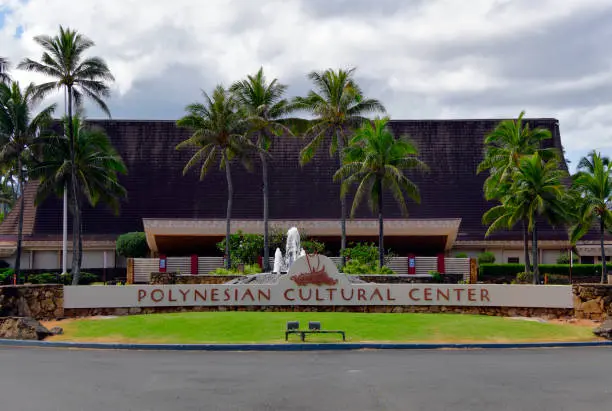
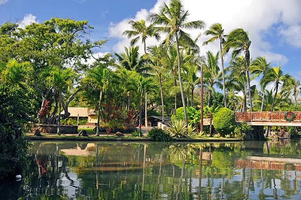

Polynesian Cultural Center
The Polynesian Cultural Center is one of Hawaii's top attractions, bringing together the cultures of Hawaii, Samoa, Tonga, Fiji, Tahiti, and Aotearoa all in one place. Located right in Laie, it offers live performances, cultural villages, and an unforgettable luau experience.

